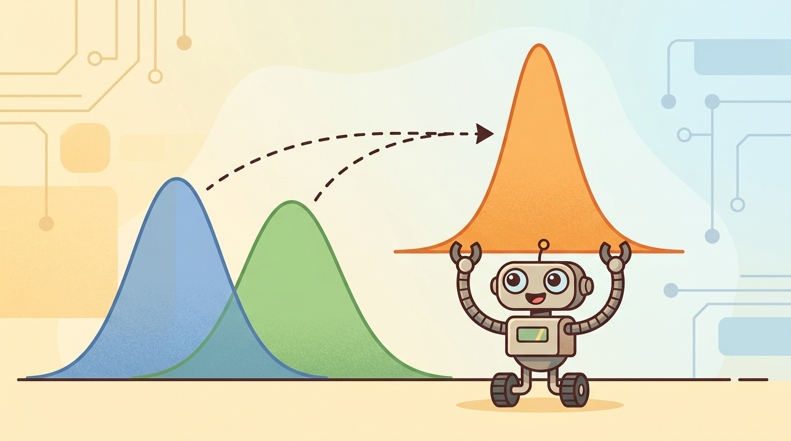

"No single sensor earned enough trust to act on alone. Together, they negotiated an estimate worth betting on."
A Sensor Array in Rare Agreement

This section assumes familiarity with Gaussian noise models and the Kalman filter update introduced in section 8.6. The fused state estimate produced here becomes the input to the controllers developed in section 7.5 (model predictive control), where the quality of the belief directly determines control horizon accuracy. The ideas recur in Part III alongside sensor and physics randomization in section 13.2, which covers how to stress-test fusion pipelines by varying noise parameters across simulation runs.
A delivery robot freezes at an intersection because its GPS says it is ten meters east of where its camera puts it. Neither sensor is lying; both are just uncertain. The robot that keeps moving is the one that knows how to combine those conflicting signals into a single confident estimate rather than picking one and discarding the other. Sensor fusion is that skill, and it sits at the center of every deployed embodied AI system right now because real hardware is never as clean as simulation. By the end of this section you will derive the inverse-variance weighting rule, connect it to the Kalman update, and implement a working multi-sensor position estimator you can stress-test with injected noise.
This section develops the technical contract for Sensor fusion intuition and practice into a usable mental model. First we define the object of study, then we connect it to the agent loop, then we test it with a compact implementation.
The key question in Sensor fusion intuition and practice is practical: what must the agent know, what can it observe, what action is available, and what evidence shows that the action worked under the stated conditions?
A representation earns its place when it changes the measurable action interface. In Sensor fusion intuition and practice, the reader should keep asking which decision becomes easier, safer, or more reliable.
A robot navigating a warehouse corridor relies on wheel odometry to track how far it has moved, but wheel slip on a polished floor silently corrupts the odometry estimate within seconds. A laser scanner can correct that drift, but a scanner cannot tell the robot how fast it is accelerating between scans. An IMU fills that gap, yet IMU bias grows over time unless periodically corrected. No single sensor covers the full state reliably: each has a failure mode the others can compensate for. Sensor fusion is the engineering discipline of combining those imperfect, complementary streams into a single belief that is more reliable than any one source alone. The payoff is concrete: robots that fuse IMU, LiDAR, and odometry (such as Boston Dynamics Spot or the Apollo autonomous vehicle platform) maintain centimeter-level localization where any single sensor would diverge within meters (as of 2024).
Theory
For Sensor fusion intuition and practice, the practical design rule is to make the interface inspectable before optimization begins: inputs, outputs, units, latency, bounds, and failure labels should all be visible in the saved artifact.
The mechanism in Sensor fusion intuition and practice is the contract between representation and action. Name what enters the module, what leaves it, which assumptions make that transformation valid, and which log would reveal a bad handoff.
Worked Example: Inverse-Variance Fusion
The core intuition of sensor fusion fits in one line: when you combine independent estimates of the same quantity, weight each one by its precision (the inverse of its variance). Given two Gaussian estimates $x_1$ with variance $\sigma_1^2$ and $x_2$ with variance $\sigma_2^2$, the optimal fused estimate and its variance are
$$\hat{x} = \frac{\sigma_2^2 x_1 + \sigma_1^2 x_2}{\sigma_1^2 + \sigma_2^2}, \qquad \frac{1}{\sigma^2} = \frac{1}{\sigma_1^2} + \frac{1}{\sigma_2^2}$$Think of inverse-variance weighting like two cooks estimating how much salt is already in a pot. One cook has a precise milligram scale and says "4.2 g"; the other is guessing by taste and says "somewhere around 3 to 6 g." You do not average the two estimates equally: you trust the scale far more, so the combined answer lands very close to 4.2 g. And crucially, your combined estimate is slightly more confident than the scale alone, because even the vague taste-test ruled out extreme values. That is exactly what inverse-variance fusion does: it weights each sensor by how tight its uncertainty is, and the act of combining two independent sources always narrows the result, even when one source is much noisier than the other.
Two facts follow. The fused estimate leans toward the sharper sensor, and combining sensors strictly reduces uncertainty as long as they are independent: fusing a GPS fix at $\sigma=2\,\text{m}$ with a scan match at $\sigma=0.5\,\text{m}$ yields a fused uncertainty of $\sigma\approx0.49\,\text{m}$, tighter than either source alone. This is the static, scalar special case of the Kalman update from Section 8.6: the Kalman gain is precisely the precision-weighting rule generalized to vectors and to a moving state.
Students often assume that adding more sensors always produces a better fused estimate, treating fusion as a simple vote where more participants means more accuracy. This is wrong in embodied AI because the inverse-variance formula assumes sensor errors are independent: if two sensors share a common error source (both a camera and a LiDAR fail in heavy dust, or both a wheel encoder and an IMU accumulate bias when the robot skids), treating them as independent causes the filter to double-count that shared error and become overconfident. The correct mental model is that fusion reduces uncertainty only when the sensors fail for different, unrelated reasons; before fusing any pair of streams, you must ask whether a single physical event (vibration, lighting change, slip, water ingress) could corrupt both at once, and if so, inflate their joint covariance accordingly rather than treating them as statistically independent witnesses.
# Fuse two independent noisy estimates of one scalar by inverse-variance weighting.
# This is the static, scalar special case of the Kalman update.
x1, var1 = 10.2, 0.50 # estimate from sensor A (e.g. wheel odometry)
x2, var2 = 9.7, 0.20 # estimate from sensor B (e.g. a laser scan match)
w1 = 1.0 / var1
w2 = 1.0 / var2
x_fused = (w1 * x1 + w2 * x2) / (w1 + w2)
var_fused = 1.0 / (w1 + w2)
print(f"fused estimate = {x_fused:.3f}")
print(f"fused variance = {var_fused:.3f} (inputs were {var1} and {var2})")
print(f"fused std {var_fused**0.5:.3f} < both inputs "
f"{var1**0.5:.3f}, {var2**0.5:.3f}")Before applying inverse-variance weighting to real sensor streams, align timestamps explicitly: the robot_localization ROS 2 package exposes a history_length parameter that buffers past state estimates so an arriving GPS fix can be fused at the correct past time rather than the current time. Skipping this step introduces a position error proportional to vehicle speed times the sensor's latency, which looks like a random walk in the innovation plot but is actually a deterministic offset. A quick diagnostic: compute the mean signed innovation for each sensor independently; a persistent nonzero mean almost always traces back to a timestamp or frame convention mismatch rather than a noise model error.
The fragment should fuse two measurements and show how confidence changes. Kalibr, tf2, robot_localization, and ROS 2 bag replay then provide the maintained workflow for synchronized multimodal evidence.
Practical Recipe
- Fix sensor extrinsics with Kalibr before writing a single line of fusion code: a 2 mm lever-arm error between an IMU and a LiDAR translates into a 2 cm position error at 10 m/s, compounding every integration step. Extrinsics matter because each sensor lives at a different physical location and orientation on the robot body; before their measurements can be fused, every reading must be expressed in a common frame. A physical robot cannot move both sensors to the same point, so the rigid-body transform between them must be measured precisely offline. Kalibr estimates this transform by recording a camera and an IMU observing a calibration target simultaneously, then solving for the rotation and translation that best align the two sensor trajectories across many frames. Without this step, the fusion filter receives geometrically inconsistent inputs and mistakes calibration error for genuine motion.
- Implement the inverse-variance fuser by hand for the two most important streams (typically IMU plus one range sensor) so you can read the Kalman gain directly and catch sign errors in covariance initialization.
- Run a static soak test for 60 seconds with the robot stationary: covariance should plateau, not grow, and innovation should have zero mean. On Spot-class hardware a gyro bias of 0.003 deg/s will produce a visible yaw drift within 30 seconds if IMU noise parameters are under-specified.
- Stress-test with controlled dropouts: disable GPS for 10 seconds while driving at 1 m/s and verify that (a) covariance grows at the expected rate from IMU-only dead reckoning and (b) the re-acquired GPS fix does not cause a discontinuous jump larger than the current covariance ellipse.
- Replace the hand filter with ROS 2
robot_localizationusing identical noise parameters, run the same ROS bag, and compare the two traces. Any difference larger than numerical precision reveals a frame convention or delay-compensation mismatch, not a noise model difference.
The common mistake in Sensor fusion intuition and practice is to celebrate the component score before checking the closed-loop handoff. The failure usually appears at the boundary: stale state, wrong frame, delayed action, saturated actuator, or metric that ignores the real task cost.
A robotics team using Sensor fusion intuition and practice should log not only final success, but intermediate observations, chosen actions, controller status, and recovery events. The logs reveal whether the method is solving the task or merely passing the easiest episodes.
Treat sensor fusion intuition and practice like a control-room label. If the label does not tell a future debugger what moved, what sensed, or what failed, it is decoration rather than engineering knowledge.
1. Neural-inertial odometry without GPS. Classical IMU integration accumulates bias rapidly, requiring external corrections. Recent work trains neural networks directly on raw IMU data to predict pose increments, bypassing hand-tuned bias models entirely. TLIO (Herath et al., 2020) showed the approach was feasible; the 2024 line of work from the CMU Robot Perception Lab (RoNIN follow-ons and IMUDB benchmarks) now targets pedestrian and legged-robot use cases where GPS is denied, achieving sub-2% relative position error over 100-meter runs using only foot-mounted IMUs.
2. Uncertainty-aware deep sensor fusion with learned covariances. Classical Kalman fusion requires hand-specified noise covariances that rarely match real sensor behavior in changing conditions. The 2024 paper "Uncertainty-Aware Deep Multi-Modal Fusion for Robust Localization" (IEEE RA-L 2024, Zhuang et al.) proposes networks that output heteroscedastic covariance estimates alongside position predictions, which are then plugged directly into a factor graph. The resulting fusion is more robust to illumination and weather changes than fixed-covariance EKF baselines on the Oxford RobotCar and KITTI datasets.
3. Event-camera fusion for high-speed state estimation. Frame-based cameras introduce motion blur and high latency at speeds above 5 m/s. Event cameras report per-pixel brightness changes asynchronously at microsecond resolution, but their outputs are challenging to fuse with standard Kalman filters because there is no fixed measurement rate. Groups at the University of Zurich Robotics and Perception Group (Scaramuzza lab) published EDS and its 2024 successors that fuse event-camera streams with IMU data using continuous-time factor graphs, enabling reliable state estimation at 10x the speed where frame-based methods fail.
Open problem for a PhD student. All three frontiers above assume that each sensor's noise statistics are stationary between calibration runs. In practice, LiDAR returns degrade in rain, IMU temperature sensitivity shifts covariance during flight, and event-camera contrast thresholds vary with lighting. No deployed system currently estimates time-varying sensor covariances online in a provably consistent way while simultaneously maintaining a tight localization estimate. A tractable thesis project: derive and implement an online covariance adaptation scheme for a two-sensor (IMU plus LiDAR) EKF that detects covariance drift using normalized innovation squared statistics, adapts noise parameters via a sliding-window maximum-likelihood estimator, and proves that the adapted filter remains consistent under bounded drift rates. The benchmark would be a real robot driven through controlled rain-chamber and temperature-cycling tests.
Can you name the observation, state estimate, action, success metric, and most likely failure mode for Sensor fusion intuition and practice? If not, the system boundary is still too vague.
Production Pattern
Sensor fusion intuition and practice sits inside the Part II robotics contract: geometry defines where things are, kinematics defines what motion is possible, dynamics defines what motion costs, control defines how errors are corrected, and sensing defines what the agent can know on time.
Fusion should reduce uncertainty only when measurements are calibrated, synchronized, and conditionally modeled. This makes the section useful to students, builders, and researchers at the same time: the idea has an intuitive role, a formal interface, a runnable check, and a failure mode that can be reproduced.
For Sensor fusion intuition and practice, state estimation converts imperfect observations into a belief usable by control. Preserve calibration, covariance, timestamp, frame, dropout behavior, and latency.
| Tool or Library | What It Handles | Verification Check |
|---|---|---|
| OpenCV | handles camera models, calibration, projection, and vision preprocessing | Verify intrinsics, distortion, image timestamp, and frame-to-camera transform. |
| ROS 2 robot_localization | fuses odometry, IMU, GPS, pose, and twist streams through ROS estimation nodes | Verify covariance, frame IDs, timestamps, and rejected measurement counts. |
| FilterPy | teaches and prototypes Kalman, extended Kalman, unscented, and particle filters | Verify process noise, measurement noise, innovation, and covariance growth. |
| Kalibr | supports practical work on Sensor fusion intuition and practice | Verify the library output against the hand-built baseline on one small case. |
| Open3D | supports practical work on Sensor fusion intuition and practice | Verify the library output against the hand-built baseline on one small case. |
Use this recipe when turning Sensor fusion intuition and practice into code, a simulator experiment, or a robot diagnostic. The point is not to use every library. The point is to keep the hand-built baseline and the maintained-tool path comparable.
- Define each sensor message with units, frame, timestamp source, calibration file, and covariance meaning.
- Run a static test, a slow-motion test, and a dropout test before fusing streams.
- Compare the hand filter with FilterPy or ROS 2 robot_localization using identical measurements and noise settings.
- Log innovation, covariance, delayed messages, rejected measurements, and downstream control effect.
- Treat perception output as a belief with uncertainty, not as ground truth handed to the controller.
For Sensor fusion intuition and practice, compare methods only through one saved artifact that preserves the inputs, outputs, units, timestamps, latency budget, configuration, seed, metric definition, and failure labels relevant to this section. The comparison is meaningful only when the same script evaluates the same panel.
Extend the section exercise by adding one perturbation specific to Sensor fusion intuition and practice and one latency or uncertainty check. Save the result in the EvidenceRecord schema, then explain which library output you trust and why.
Fusion fails when streams disagree but the stack cannot explain why. Check clock offsets, transform tree, covariance calibration, dropout behavior, and conflict resolution before trusting the fused state.
Fusion improves estimates only when sensors are genuinely independent and their covariances are correctly specified. Three situations break that assumption. First, correlated errors: a camera and a LiDAR mounted on the same rigid body both fail in a dust cloud, so treating them as independent overstates confidence. Second, stale covariance: if a sensor's reported variance is tuned for ideal conditions but real-world noise is ten times larger, the filter weights that sensor too heavily and the fused result is worse than using the better sensor alone. Third, latency mismatch: fusing a 1 Hz GPS fix with a 200 Hz IMU without explicit delay compensation introduces a systematic position error proportional to vehicle speed. In each case the symptom is a fused estimate that looks confident but is less accurate than its best input.
Technical Core
Sensor fusion is not averaging. It is a disciplined way to combine measurements that observe different parts of the state, arrive at different rates, and carry different uncertainty. Good fusion lets each sensor correct the failure modes of another sensor without hiding the disagreements that reveal calibration or timing bugs. Figure 8.7.T summarizes the chain this section must preserve when moving from a teaching example to a real embodied system.
For two independent scalar measurements $z_1$ and $z_2$ with variances $\sigma_1^2$ and $\sigma_2^2$, the fused estimate is $\hat z=(z_1/\sigma_1^2+z_2/\sigma_2^2)/(1/\sigma_1^2+1/\sigma_2^2)$. The smaller-variance sensor gets more weight because precision is inverse variance. In real robots, this same idea appears inside Kalman gains, factor graphs, and weighted residual objectives.
- Convert every measurement into the same state convention, coordinate frame, and unit system.
- Align timestamps or explicitly compensate for delay before comparing measurements.
- Use covariance to weight sensors, then gate innovations that are inconsistent with the model.
- Log sensor-specific residuals so one faulty stream cannot hide behind a fused estimate.
- Run ablations with each sensor removed, delayed, biased, and dropped out.
| Fusion Issue | Symptom | Diagnostic Recipe |
|---|---|---|
| Frame mismatch | Estimate jumps when a sensor update arrives. | Project a static target through each transform and compare in one frame. |
| Clock mismatch | Fast motion creates systematic lag or overshoot. | Plot measurement time, arrival time, processing time, and state-update time. |
| Correlation | Two sensors appear independent but share the same source of error. | Check whether residuals move together during vibration, lighting change, or slip. |
| Overconfident covariance | Fused estimate rejects correct measurements as outliers. | Track normalized innovations and rejected measurement counts by sensor. |
| Dropout handling | State stays confident after an important stream disappears. | Force controlled dropouts and verify covariance grows during the gap. |
Expected output is a fused belief plus per-sensor residuals. If the fused trace looks clean but one sensor's innovation has a persistent sign, the system is hiding a calibration or timing error.
A fusion result fails when covariance shrinks without better measurements, timestamps are silently resampled, or camera, IMU, LiDAR, and tactile streams are fused in inconsistent frames.
Section References
Core references for Sensor fusion intuition and practice: Modern Robotics; Murray, Li, and Sastry; Siciliano et al.; LaValle; and official documentation for Drake, MuJoCo, Pinocchio, CasADi, python-control, GTSAM, ROS 2, and OpenCV as applicable.
Use these references to check notation, frame conventions, units, solver assumptions, and maintained-library behavior.
Sensor fusion intuition and practice is useful when it makes the perception-action loop more reliable, not when it merely adds a more impressive model name.
Design a method-matched experiment for Sensor fusion intuition and practice. Specify the environment, observations, actions, metric, one perturbation, and the library output you would compare against the hand-built baseline.
Project Ideas
Beginner (weekend): Two-sensor position fuser with injected noise. Build a Python script using FilterPy that fuses simulated wheel odometry and GPS readings with adjustable noise levels, then plots the fused estimate alongside each raw stream. The key challenge is setting realistic covariance values so the filter trusts each sensor in proportion to its actual noise rather than an arbitrary constant.
Intermediate (1-2 weeks): IMU plus LiDAR odometry in a ROS 2 simulation. Use the ROS 2 robot_localization package with a Gazebo or PyBullet simulated differential-drive robot, fusing an IMU and a 2D laser scanner to maintain a localization estimate while the robot drives a figure-eight path. The key challenge is diagnosing timestamp and frame-convention mismatches by comparing per-sensor innovation plots against the fused trace and confirming that covariance grows correctly during controlled sensor dropout windows.